数字信号处理
学不进去
封面图：X：@komtang
概念
前向差分$\Delta x=x(n+1)-x(n)$，后向差分$\Delta x=x(n)-x(n-1)$
分贝是一个比值，没有单位，对于功率是$10lgW$对于电压是$20lgV$，本门课程取后面20那个
数字频率：就是x(n)的角速度，记作$w_o$
模拟频率：真实世界的频率$f_o$
抽样频率：$f_s$
关系：$w_o=2\pi f_o/f_s$
稳定系统：有界输入得到有界输出，LSI中等价于单位抽样相应有l1范数
自由响应：齐次通解；强迫响应：非齐次特解
理想抽样频谱是原频谱的抽样频率-周期延拓，所以奈奎斯特采样定理要求抽样频率大于最高频率两倍，抽样频率的一半称为折叠频率，理想抽样的恢复直接乘上矩形低通滤波器就行了，也就是时域卷积sinc
实际抽样的δ函数有厚度，会导致频谱延拓越往外幅度越低，此时只需取最中间一项，采样定理仍然成立
频率相差2pi整数倍的三角函数序列是一样的。使用同一个抽样频率$f_s$对两个不同的三角函数抽样时，如果两个三角函数频率恰好相差了抽样频率的整数倍，那么抽出来的序列也是一样的
DFT第k个点对应的模拟频率为$f_k=k·f_s/N$
频谱分辨率为
$$\boxed{\Delta f=f_s/N}$$
（或者记频率分辨率乘点数等于总频率，分辨率的倒数也是记录长度）
如果信号频率不是正好落在某个$k\Delta f$上，就会发生栅栏效应，导致峰值出现在最近的一个 DFT 频率点上
互相关函数
$$r_{xy}(m)=\sum_{n=-\infty}^\infty x(n)y(n-m)$$‘
两信号频谱重叠时才有相关性
$$R_{xy}(k)=X(k)Y(N-k)=X(k)Y^*(k)$$
两个模拟正弦信号频率差为抽样频率的整数倍时，所得的序列相同
同一个正弦模拟信号用两种不同抽样频率抽样，当满足下述关系式时所得抽样序列相同
$$|\frac{f_o}{f_{s2}}-\frac{f_o}{f_{s1}}|=k$$
各种变换
Z变换
就是弄个关于1/z的级数
$$\mathcal{Z}[x(n)]=X(z)=\sum_{n=-\infty}^\infty x(n)z^{-n}$$
做题的时候大多数时候都是在弄等比数列求和，求反变换基本上也是在求一个式子他的级数展开形式，这个时候注意一下收敛域，然后根据等比级数求和公式反向展开就行了。
表
| 时域 | 拉普拉斯 | Z变换 |
| :--------------------------: | :------------------------------: | :---------------------------------------------------------------: |
| $$f\left( t \right) $$ | $$F\left( s \right) $$ | $$F\left( z \right) $$ |
| $$\delta \left( t \right) $$ | $$1$$ | $$1$$ |
| $$1\left( t \right) $$ | $$\frac{1}{s}$$ | $$\frac{z}{z-1}$$ |
| $$t$$ | $$\frac{1}{s^2}$$ | $$\frac{Tz}{\left( z-1 \right) ^2}$$ |
| $$\frac{t^2}{2}$$ | $$\frac{1}{s^3}$$ | $$\frac{T^2z\left( z+1 \right)}{2\left( z-1 \right) ^3}$$ |
| $$e^{-at}$$ | $$\frac{1}{s+a}$$ | $$\frac{z}{z-e^{-aT}}$$ |
| $$\sin \omega t$$ | $$\frac{\omega}{s^2+\omega ^2}$$ | $$\frac{z\sin \omega T}{z^2-2z\cos \omega T+1}$$ |
| $$\cos \omega t$$ | $$\frac{s}{s^2+\omega ^2}$$ | $$\frac{z\left( z-\cos \omega T \right)}{z^2-2z\cos \omega T+1}$$ |
z域复卷积定理
$$y(n)=x(n)·h(n)$$
$$Y(z)=\frac{1}{2\pi j}\oint X(\frac{z}{v})H(v) v^{-1}dv$$
其实是从傅里叶变换卷积来的，令$z=exp(2\pi jw),v=exp(2\pi jv)$
$$Y(e^{2\pi jw})=\int_0^1X(e^{2\pi j(w-v)})H(e^{2\pi jv})dv$$
DFT=离散傅里叶变换
作用区间是有限长，通常为周期。频率是离散的，只取周期内有限个单位根
$$DFT[x(n)]=X(k)=\sum_{n=0}^lx(n)e^{-2\pi jnk/l}$$
这玩意就是那个，由单位根构成的DFT矩阵（注意e指数上有负号），乘到有限长度上
$$F = \begin{bmatrix} 1 & 1 & 1 & \cdots & 1 \\ 1 & \omega_N & \omega_N^2 & \cdots & \omega_N^{N-1} \\ 1 & \omega_N^2 & \omega_N^4 & \cdots & \omega_N^{2(N-1)} \\ \vdots & \vdots & \vdots & \ddots & \vdots \\ 1 & \omega_N^{N-1} & \omega_N^{2(N-1)} & \cdots & \omega_N^{(N-1)(N-1)} \end{bmatrix}$$
其中 $\omega_N = e^{-2\pi j / N}$，$j$是虚数单位。
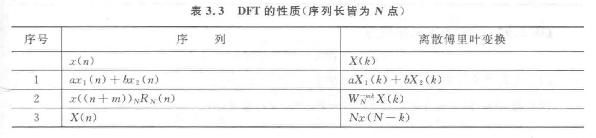
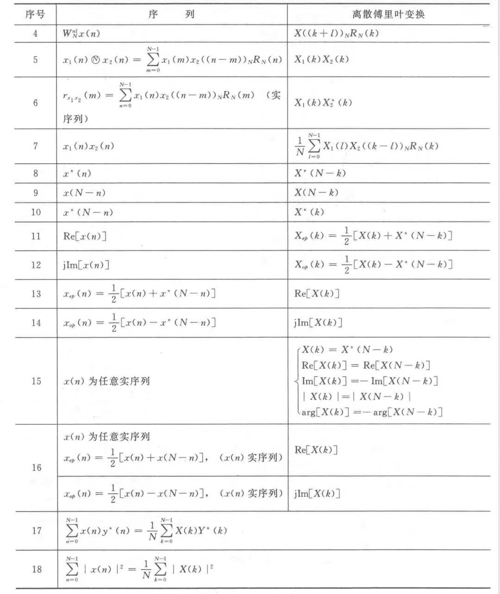
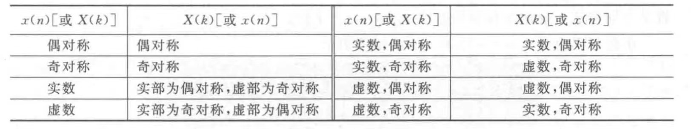
DFS=离散傅里叶级数
对无限长周期序列，只对一个周期作变换
$$DFS[\tilde{x}(n)]=\tilde{X}(k)=\sum_{n=0}^{N-1}\tilde{x}(n)e^{-2\pi jnk/N}$$
跟DFT的区别仅在于DFS是无限长序列到无限长序列的变换
如果T是周期，那nT也可以当周期，这样DFS会变为
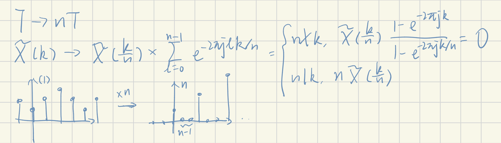
DTFT=离散时间傅里叶变换
就是把Z变换里的Z换成$e^{-jw}$，所以变换后的自变量w是连续的
$$DTFT[x(n)]=X(e^{-jw})=\sum_{n=-\infty}^\infty x(n)e^{-jwn}$$
IDFT=逆离散傅里叶变换
DFT那个矩阵，不是酉（就差个归一化系数）而且对称的吗，那逆矩阵就直接取个共轭就行了，然后乘在序列上
在这本书上正变换不带系数，所以逆变换记得还要带上系数$1/N$
时域频域关系
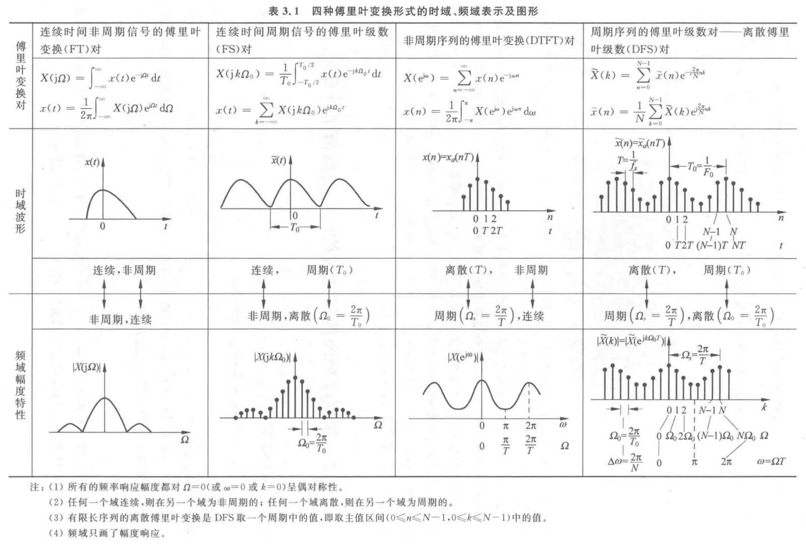
| 时域 | 频域 | 何变换 |
| ----- | ----- | ---- |
| 连续非周期 | 连续非周期 | FT |
| 离散周期 | 离散周期 | DFS |
| 连续周期 | 离散非周期 | FS |
| 离散非周期 | 连续周期 | DTFT |
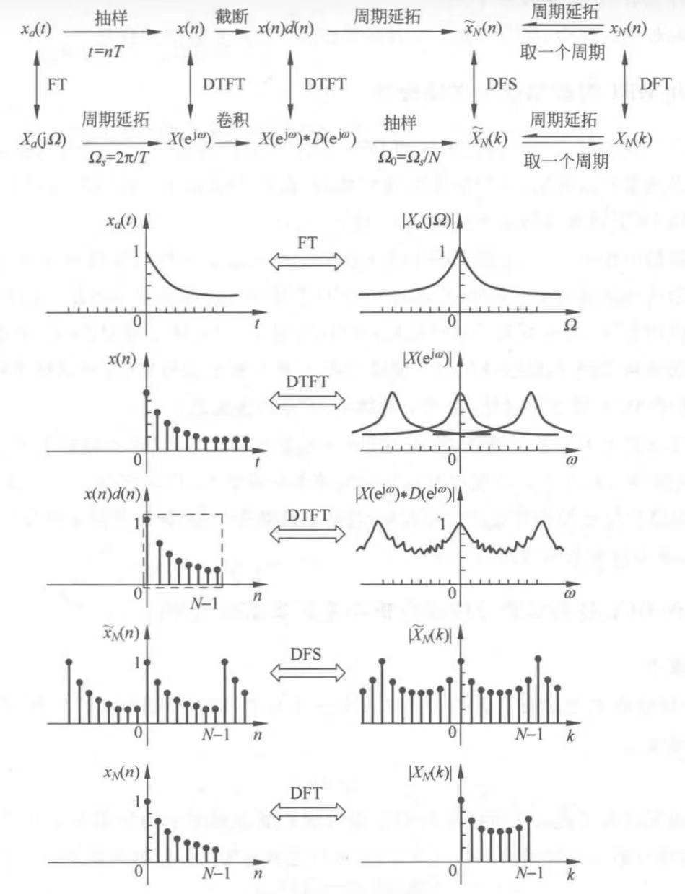
DFT处理
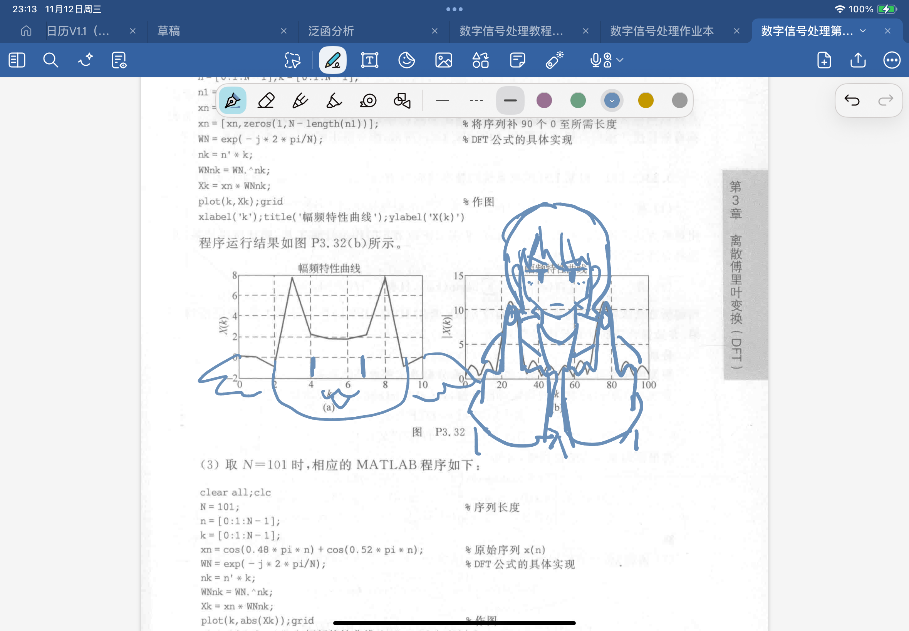
- 时域抽样：抽样频率必须大于两倍信号频率以免产生频谱混叠
- 时域截断：为了获得有限长序列
- 拿矩形直接截断会把频域变成几个中指（食指无名指小拇指是旁瓣），也就是谱线展宽，这叫频谱泄漏
- 旁瓣之间的相互干扰叫谱间串扰
- 可以通过缓变窗函数或者加宽窗宽来避免
- 频域抽样：将连续的频率抽样为离散，抽样间隔必须小于频谱分辨率
- 这个时候先不考虑频率上的抽样的话，我们考虑频域连续的DTFT($X(e^{jw})$)，由于求和项由$e^{-jwn}$构成，n为整数，故$w+2k\pi$不影响求和结果。如果模拟频率相对于抽样频过高（超过采样定理），那么要考虑数字频率以周期$2\pi$的延拓之后再做低通运算才是合理的
- 两个相邻频率点之间的原始频率是不知道的，这叫栅栏效应，可以通过增加时域抽样点数进而增加DFT点数解决，或者通过补0增加DFT点数也可以
- 频率抽样定理：频率抽样点数必须不小于原序列点数，否则不能恢复原序列（从DFT角度思考是直接的，几点抽样就会发生几点延拓，而且几点就有几个信息，少抽点不就漏信息了）
FFT
DIT
(按时间抽样)
按奇偶，最终结果分前后半
前半
$$X(k)=X_1(k)+W^k_N X_2(k)$$
级数那个部分恰好偏移了一点所以用$W^k_N$给他补上
后半
$$X(k+\frac{N}{2})=X_1(k)-W^k_NX_2(k)$$
因为后半的奇数部分叠了个半周期所以多了个负号
DIF
(按频率抽样)
序列前后半互相配对，输出分奇偶
偶
$$X(2r)=DFT_{N/2}[x(n)+x(n+\frac{N}{2})]$$
为什么是加呢因为半周期被偶数k冲掉变成全周期了
奇
$$X(2r+1)=DFT_{N/2}[[x(n)-x(n+\frac{N}{2})]W^n_N]$$
2r+1的那个1就补到$W^n_N$里面了
IFFT
最naive的想法就是把FFT里的W全部取个共轭，然后每一级多乘1/2，这样总共就会集成$1/2^l$系数
或者先照常做FFT，然后将结果的自变量倒置成为N-n，前面加个系数1/N
快速卷积
把这个过程想成一个小蛋白质在边移动边复制长链DNA。。。注意了，为了使用FFT，下述单个卷积过程全部为圆周卷积
重叠相加法：将长序列切成数个长为L的短段，分别与长为M的另一个短段做圆周卷积。我们希望拿圆周卷积去模拟线性卷积，所以每个L段末尾需要补M-1个0作为缓冲！圆周卷积头尾分离的时候，也即只计算了卷积的半边的时候。这些部分需要与前后的半边部分相加才能得到最终结果
重叠保留法：每个卷积采用圆周卷积，然后前M-1个点由于无法代表线性卷积所以舍弃(要把线段完全推进去)。核心思想是只取圆周卷积的线性部分，并将这些部分相接最后拼出完整的卷积，所以我们还需要额外处理长序列换块的部分。对第一个长序列，我们给前M-1个数据的位置补0，今后每一段数据的前M-1个点必须沿用前段数据的后M-1个点，以完成连接处的自然卷积
圆周卷积可以用FFT做
数字滤波器
模拟滤波器：就是让模拟信号通过一堆电阻电容等电路的组合
数字滤波器：一定涉及到关于数字信号的计算
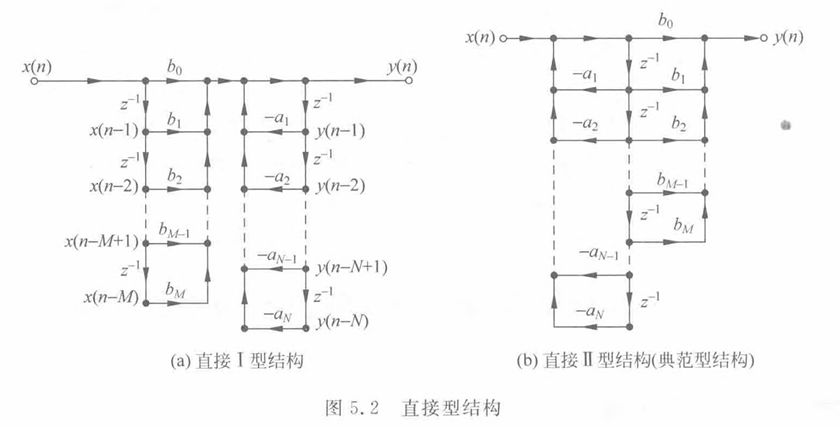
Mason公式告诉了我们系统函数，从系统函数的系数又可以很容易画出这两种直接型结构
$$H(z)=\frac{\sum_{k=0}^Mb_kz^{-k}}{1+\sum_{k=1}^Na_kz^{-k}}$$
串联系统函数相乘
并联系统函数相加
FIR滤波器分母是1
频率抽样系统
我知道了H(z)在单位圆上等间距的数个点上的取值，我想通过某种延拓将H(z)还原出来，最直接的想法就是构造这些极点，在每个极点上还原到采样值
$$H(z)=\frac{1-z^{-N}}{N}\sum_{k=0}^{N-1}\frac{H_r(k)}{1-W^{-k}_Nz^{-1}}$$
对于这个式子改进两点，第一点是把极点挪至半径略小于1的圆上避免发散，第二点是根据h是实数，H(k)有圆周共轭对称性的性质，将求和项pair一下最后留下实数运算
pair出来了一个很丑的式子。。
$$H_k(z)=\frac{\cos\theta(k)-r\cos(\theta(k)-2\pi k/N)z^{-1}}{1-2r\cos(2\pi k/N)z^{-1}+r^2z^{-2}},\quad\theta(k)=argH(k)$$
偶数采样点时0和半周期是实数，最终公式
$$\frac{1-r^Nz^{-N}}{N}[\frac{H(0)}{1-rz^{-1}}+\frac{H(N/2)}{1+rz^{-1}}+\sum_{k=1}^{N/2-1}2|H(k)|H_k(z)]$$
奇数采样点时只有0是实数，其他全部pairing，也就是说上式去掉H(N/2)就好了
线性相位
FIR的h是实数，且满足偶对称或奇对称时，系统的频率响应相位是严格线性的。有了对称性就可以在信号图给配对了
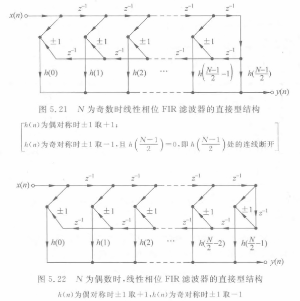
这有点像两个方向的地铁，每一站有两个方向下车的乘客，最后乘客从最下面出站
格型结构
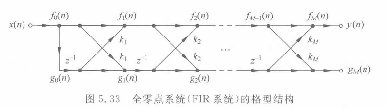
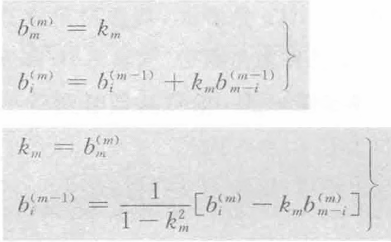
格型转标准型，简单的话直接给mason一下得了
标准型或已知H(z)，要一层一层解b，最后take $b^{(m)}_m$
全通滤波器
零极点成单位圆对、成共轭对出现。极点在单位圆内零点在单位圆外。
$$H_{ap}(z)=K\frac{z^{-1}-a}{1-az^{-1}}$$
$$H_{ap}(z)=\prod_{i=1}^N\frac{z-\frac{1}{a_i^*}}{z-a_i}·\frac{z-\frac{1}{a_i}}{z-a_i^*},\quad|a_i|<1$$
最大相位系统
全部极点在单位圆内，全部零点在单位圆外
最小相位系统
零极点全部在单位圆内
并且能量集中在n=0附近，所以被称为最小延迟系统
巴特沃斯低通滤波器
$$|H_a(j\Omega)|^2=\frac{1}{1+(\Omega/\Omega_c)^{2N}}$$
$\Omega_c$代表幅度下降至$1/\sqrt{2}$时频率
做题步骤
- 求N(分子较大，两侧均衡(正比))
$$\frac{10^{0.1A_s}-1}{10^{0.1R_p}-1}\le(\frac{\Omega_{st}}{\Omega_p})^{2N}$$
- 求$\Omega_c$
$$\frac{\Omega_p}{^{2N}\sqrt{10^{0.1R_p}-1}}\le\Omega_c\le\frac{\Omega_c}{^{2N}\sqrt{10^{0.1A_s}-1}}$$
- 根据N去查那个鬼表H(s)，然后把s换成$s/\Omega_c$
切比雪夫I型低通滤波器
$$|H_a(j\Omega)|^2=\frac{1}{1+\varepsilon^2 C_N^2(\Omega/\Omega_c)}$$
$$C_N(x)=\cos(N\arccos x),\quad(x\le1);\quad ch(Narcchx),\quad(x>1)$$
切比雪夫II型低通滤波器
$$|H_a(j\Omega)|^2=\frac{1}{1+(\varepsilon^2 C_N^2(\Omega_{st}/\Omega))^{-1}}$$
第一类线性相位（相位正比）
$$H(w)e^{-j\tau w}$$
充分条件为h序列以中点为轴对称
N奇数时，H(w)对0，pi，2pi偶对称，什么滤波器都能做
N偶数，H对pi奇对称，其他偶对称，也就是说在pi为0，只能用来设计低通和带通
理想低通$e^{-jw\tau}$的时域：
$$\frac{\sin(w_c(n-\tau))}{\pi(n-\tau)},~~(n\neq\tau)\quad w_c/\pi,~~(n=\tau)\quad\tau=(N-1)/2$$
第二类线性相位
$$H(w)e^{-j(\tau w+\beta)}$$
充分条件中的序列对称轴会根据β而平移，当β取90°时，条件是沿着中点奇对称
N奇数时，H在kpi处为0，只能设计带通
N偶数时，H在2kpi为0，只能设计带通和高通
群延时$\tau=\frac{N-1}{2}$，与抽样间隔正相关
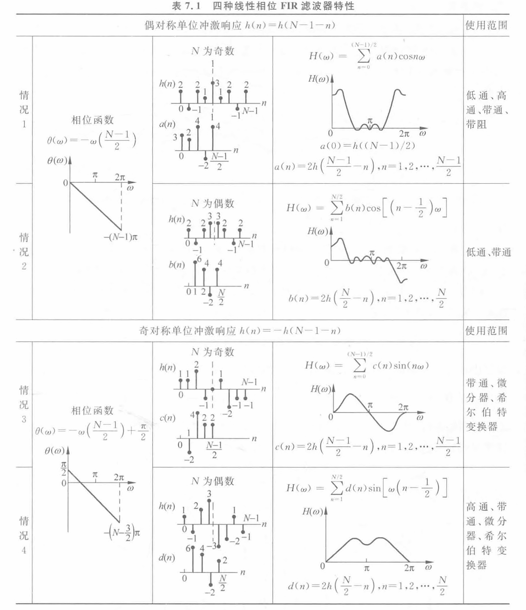
零点共轭且倒数成对存在
(时域)窗函数设计法
给定理想的$H(e^{jw})$让你设计这个数字滤波器。首先IDTFT到时域h，这时候就要加个窗函数截断成有限长。再得到加窗后的$H(e^{jw})$，直接将理想响应和窗函数Z域卷积即可
以矩形窗的sinc为例，左右两个绝对值最小的零点的外侧那个往下跌的瓣就叫第一旁瓣
矩形窗最大尖峰一直为8.95%而不会随着N增大而变化，是由于突变产生，所以我们可以选取缓变的窗（但是会加宽过渡带）。先由阻带最小衰减确定窗函数形状再由过渡带宽确定窗长点数N
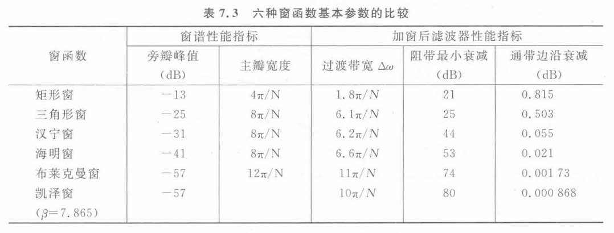
做题的时候直接对着这个表就是一顿查，先查后面的dB条件确定窗类型（往下取），再根据过渡带宽确定抽样点数
- 三角形窗（巴特列特）
- 升余弦窗（汉宁）
- 改进升余弦窗（海明）
- 二阶升余弦窗（布莱克曼）
- 凯泽窗（巨复杂，还有贝塞尔函数）
dB和δ关系
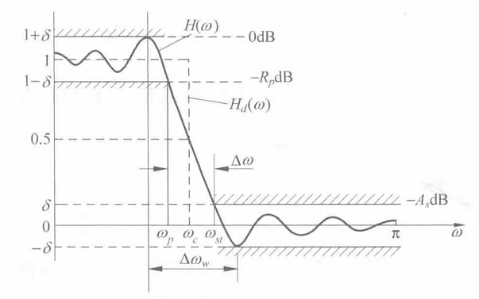
通带最大衰减
$$R_p=-20\lg\frac{1-\delta}{1+\delta}$$
阻带最小衰减
$$A_s=-20\lg\frac{\delta}{1+\delta}$$